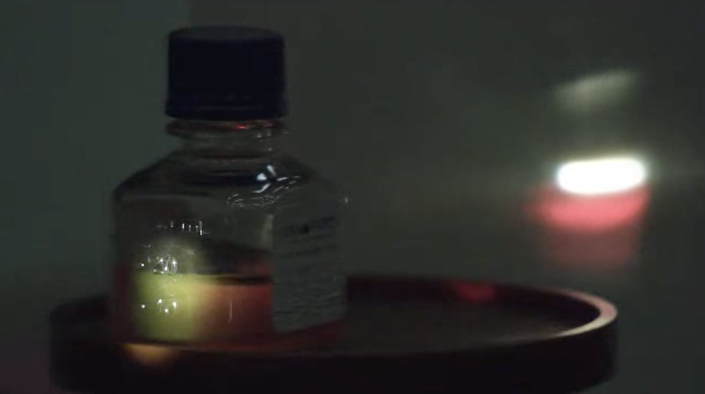

31 Electromagnetic Waves in Metals
Metals have free charges, which modify the propagation of light. Their influence is large and gives metals their characteristic reflection and color. In this case, we have to include the free charge density \(\rho_f\) and the current density \(\vec{j}\) in the Maxwell equations and derive the wave equation accordingly. Instead of modifying the wave equation, we would like to go a different way here. We would like to derive the dielectric function for metals based on a microscopic description, which is only approximate but captures some basic features.
31.1 Drude Model
The model we would like to put forward is the Drude model. It considers the motion of a charge in the electromagnetic field of a wave. As compared to our previous attempts on bound electrons in atoms, there is no direct restoring force for the free charges in the metal. The equation of motion therefore looks as
\[ m_e\frac{d^2\vec{r}}{dt^2}+m_e\Gamma \frac{d\vec{r}}{dt}=e\vec{E}_0 e^{i\omega t} \]
Here, the coefficient \(\Gamma\) is given by
\[ \Gamma=\frac{v_f}{l}=\frac{1}{\tau} \]
where \(v_f\) is the Fermi velocity and \(l\) is the mean free path electrons travel before colliding with a lattice site inside the metal. To obtain an expression for the refractive index, we use again the ansatz
\[ \vec{r}=\vec{r}_0 e^{i\omega t} \]
from which we obtain an expression for \(\vec{r}_0\). With his solution we can again calculate the polarization density and finally also the dielectric function
\[ \epsilon_r(\omega)=n^2=1-\frac{\omega_p^2}{\omega^2-i\Gamma \omega} \]
with
\[ \omega_p=\sqrt{\frac{Ne^2}{\epsilon_0 m}} \]
which is called the plasma frequency. It is a characteristic for each metal, since the density of free charges in the metal enters the equation. It is located in the UV region of the electromagnetic spectrum.
| Parameter | Symbol | Gold Value | Silver Value | Copper Value | Units |
|---|---|---|---|---|---|
| Free electron density | \(N\) | 5.9 × 10²⁸ | 5.86 × 10²⁸ | 8.47 × 10²⁸ | m⁻³ |
| Electron mass | \(m_e\) | 9.109 × 10⁻³¹ | 9.109 × 10⁻³¹ | 9.109 × 10⁻³¹ | kg |
| Elementary charge | e | 1.602 × 10⁻¹⁹ | 1.602 × 10⁻¹⁹ | 1.602 × 10⁻¹⁹ | C |
| Resulting plasma frequency | \(\omega_p\) | 13.8 × 10¹⁵ | 13.7 × 10¹⁵ | 16.5 × 10¹⁵ | rad/s |
| Frequency | \(f\) | 2.18 × 10¹⁵ | 2.18 × 10¹⁵ | 2.62 × 10¹⁵ | Hz |
| Plasma wavelength | \(\lambda_p\) | 138 | 138 | 114 | nm |
The complex refractive index \(n\) is composed of two parts: the real part \(n_r\) which describes the phase velocity of light in the material, and the imaginary part \(\kappa\) (kappa) which describes the absorption. These are related by:
\[ n=n_r-i\kappa \]
Since the dielectric function \(\epsilon\) is equal to the square of the refractive index \(n\), we can expand this relationship to separate the real and imaginary components:
\[ n^2=n_r^2-\kappa^2-2i n_r \kappa=\epsilon^{\prime}+i\epsilon^{\prime\prime} \]
Here, \(\epsilon^{\prime}\) represents the real part of the dielectric function, which determines how much polarization occurs in response to an applied electric field, while \(\epsilon^{\prime\prime}\) represents the imaginary part, which determines how much energy is absorbed by the material. From the Drude model, we can express these components explicitly:
\[ \epsilon^{\prime}=n_r^2-\kappa^2=1-\frac{\tau^2 (\omega^2-\omega_p^2)}{1+\omega^2\tau^2} \]
\[ \epsilon^{\prime\prime}=2n_r\kappa=\frac{\omega_p^2\tau}{\omega(1+\omega^2\tau^2)} \]
These equations directly connect the optical properties (\(n_r\) and \(\kappa\)) to the physical parameters of the metal like the plasma frequency ωp and the relaxation time \(\tau\). When \(\epsilon^{\prime}\) is negative, which occurs below the plasma frequency, the metal reflects light strongly. When \(\epsilon^{\prime\prime}\) is large, the metal absorbs light efficiently. Together, these components fully characterize how the metal interacts with electromagnetic radiation.
The figure above shows the dielectric function for Gold as determined from the parameters \(\omega_{p}=13.8\times 10^{15}\, \rm{s}^{-1}\) and \(\Gamma=1.075\times 10^{14}\, \rm{s}^{-1}\). The real value of the dielectric function is negative over the whole visible range stating that there is no propagating wave inside the matal. It just becomes positive below the plasma frequency. The imaginary part increases continuously with the wavelength.
31.1.1 Conductivity
Als we calculate the position \(\vec{r}\) of the electrons in the oscillating electric field, we may also obtain its velocity, which helps us to calculate a new quantity, which is the conductivity \(\sigma\) of the metal. This conductivity will be frequency dependent as well as the charges will not follow the electric field oscillations in the same way at different frequencies. The conductivity is following from Ohm’s law, which is given by
\[ \vec{j}=\sigma \vec{E}=N e \vec{v} \]
where we explicity wrote the current density on the right side. Following this relation, the conductivity is obtained as
\[ \sigma=\epsilon_0 \omega_p^2\frac{\tau(1+i\omega\tau)}{1+\omega^2\tau^2} \]
from the Drude model and we may express the real and imaginary parts of the dielectric function also in relation to the conductivity by
\[ \epsilon^{\prime}=1-\frac{\mathcal{R}(\sigma)\tau}{\epsilon_0} \]
\[ \epsilon^{\prime\prime}=\frac{\mathcal{Im}(\sigma)}{\epsilon_0 \omega^2 \tau} \]
which readily tells us, that we obtain information on the conductivity at high frequencies from optical measurements.
31.2 Optical Properties of Metals
31.2.1 Reflectivity of Metals
The reflectivity of a metal is closely related to its dielectric function. The reflectivity \(R\) of a metal can be calculated from the complex dielectric function \(\epsilon\) using the Fresnel equations:
\[ R = \left|\frac{n - 1}{n + 1}\right|^2 \]
where \(n = \sqrt{\epsilon}\) is the complex refractive index.
The plot below shows the square of complex refractive index \(n\) for gold according to the Drude model. Interestingly the square of the real part of the refractive index is negative below the plasma frequency. This means that the wave is evanescent and cannot propagate in the metal. This is the reason why metals are opaque in the visible range.
| Wavelength (nm) | Re(n²) | Im(n²) |
|---|---|---|
| 10.0 | 0.99 | -0.00 |
| 88.1 | 0.58 | -0.00 |
| 166.2 | -0.48 | -0.01 |
| 244.2 | -2.20 | -0.04 |
| 322.3 | -4.57 | -0.10 |
From the square of the refractive index, we can calculate the reflectivity of the metal. The plot below shows the reflectivity of gold with and without damping. Without damping, the reflectivity is exactly 1 below the plasma frequency and drops sharply above it. The damping broadens the reflectivity curve and reduces the reflectivity below the plasma frequency.
| Wavelength (nm) | R (with damping) | R (no damping) |
|---|---|---|
| 100.0 | 0.036 | 0.036 |
| 280.2 | 0.982 | 1.000 |
| 460.4 | 0.984 | 1.000 |
| 640.5 | 0.984 | 1.000 |
| 820.7 | 0.984 | 1.000 |
31.2.2 Dispersion Relation in Metals
To understand how electromagnetic waves propagate in metals, we need to derive the dispersion relation. Starting from Maxwell’s equations and using the dielectric function we derived from the Drude model, we can obtain the wave equation in metals:
\[ \nabla^2\vec{E}-\frac{1}{c^2}\frac{\partial^2\vec{E}}{\partial t^2}=\mu_0\frac{\partial\vec{j}}{\partial t} \]
For a plane wave solution \(\vec{E}=\vec{E}_0e^{i(kx-\omega t)}\), and using the relation between current density and electric field through conductivity \(\vec{j}=\sigma\vec{E}\), we get:
\[ -k^2\vec{E}+\frac{\omega^2}{c^2}\vec{E}+i\omega\mu_0\sigma\vec{E}=0 \]
This leads to the dispersion relation:
\[ k^2=\frac{\omega^2}{c^2}\left(1+i\frac{\sigma}{\epsilon_0\omega}\right)=\frac{\omega^2}{c^2}\epsilon_r(\omega) \]
Using the Drude model expression for \(\epsilon_r(\omega)\), we can write:
\[ k^2=\frac{\omega^2}{c^2}\left(1-\frac{\omega_p^2}{\omega^2-i\Gamma\omega}\right) \]
This dispersion relation shows two important regimes:
For \(\omega < \omega_p\): The wave vector \(k\) becomes imaginary, meaning the waves are evanescent and decay exponentially into the metal. This explains why metals are reflective at visible frequencies.
For \(\omega > \omega_p\): The wave vector \(k\) is real, and electromagnetic waves can propagate through the metal. This typically occurs in the ultraviolet region for most metals.
The penetration depth (skin depth) \(\delta\) of the electromagnetic wave into the metal can be calculated from the imaginary part of \(k\):
\[ \delta=\frac{1}{\text{Im}(k)} \]
This skin depth is typically on the order of tens of nanometers in the visible region, explaining why metals are opaque even in thin films.
The figure above shows the dispersion relation for electromagnetic waves in a metal according to the Drude model. Several important features can be observed:
Below the plasma frequency (\(\omega < \omega_p\)), the real part of \(k\) is zero while the imaginary part is large, indicating evanescent waves that decay exponentially into the metal.
Above the plasma frequency (\(\omega > \omega_p\)), the real part of \(k\) becomes dominant, allowing wave propagation through the metal.
The light line (dashed) represents the dispersion relation in vacuum (\(\omega = ck\)). The metal’s dispersion relation deviates significantly from this line, especially near and below the plasma frequency.
The presence of damping (\(\gamma\)) leads to a smooth transition around \(\omega_p\) rather than an abrupt change.
This behavior explains why metals are highly reflective at frequencies below the plasma frequency (typically in the visible range) but can become transparent at higher frequencies in the ultraviolet region.
In the simple interpretation of the Drude model, we often say that below the plasma frequency, waves cannot propagate in the metal because the dielectric function is negative. However, this is only strictly true when we ignore damping (\(\Gamma = 0\)).
When we include damping (\(\Gamma \neq 0\)), the dielectric function becomes complex:
\[ \epsilon_r(\omega)=1-\frac{\omega_p^2}{\omega^2-i\Gamma \omega} \]
In the low-frequency limit ($<< _p), this becomes:
\[ \epsilon_r(\omega) \approx 1-\frac{\omega_p^2}{-i\Gamma \omega} \approx -\frac{\omega_p^2}{-i\Gamma \omega} = \frac{\omega_p^2}{\Gamma \omega}i \]
The wave vector is then:
\[ k = \frac{\omega}{c}\sqrt{\epsilon_r} \approx \frac{\omega}{c}\sqrt{\frac{\omega_p^2}{\Gamma \omega}i} = \frac{\omega}{c}(1+i)\sqrt{\frac{\omega_p^2}{2\Gamma \omega}} \]
This shows that both the real and imaginary parts of \(k\) are non-zero and equal in magnitude in this limit. This represents a heavily damped wave that can propagate a short distance into the metal.
The wave in the metal has the form:
\[ E(x) = E_0 e^{ikx} = E_0 e^{i\text{Re}(k)x}e^{-\text{Im}(k)x} \]
The skin depth is then:
\[ \delta = \frac{1}{\text{Im}(k)} = \frac{c}{\omega}\sqrt{\frac{2\Gamma \omega}{\omega_p^2}} \]
| freq (Hz) | delta_full (nm) | delta_low (nm) |
|---|---|---|
| 1.00e+12 | 123.63 | 127.08 |
| 6.32e+12 | 44.97 | 50.54 |
| 4.00e+13 | 23.13 | 20.10 |
| 2.53e+14 | 21.91 | 8.00 |
| 1.60e+15 | 31.64 | 3.18 |
31.2.3 Skin Depth
At low frequencies, the skin depth can be approximated as:
\[ \delta \approx \sqrt{\frac{2}{\omega_p^2\Gamma}}\frac{c}{\sqrt{\omega}} = \sqrt{\frac{2}{\sigma_0\mu_0\omega}} \]
where \(\sigma_0 = \frac{\omega_p^2\epsilon_0}{\Gamma}\) is the DC conductivity. This shows the characteristic \(\delta \propto 1/\sqrt{\omega}\) behavior.
Some important observations from the plot:
- At low frequencies (below the plasma frequency), the skin depth follows the \(1/\sqrt{\omega}\) dependence
- For visible light (\(\omega \approx 10^{14}-10^{15} Hz\)), the skin depth is typically tens of nanometers
- Above the plasma frequency, the skin depth increases rapidly as the metal becomes transparent
- For Gold at room temperature and visible frequencies, the skin depth is approximately 20-30 nm
This small skin depth explains why:
- Thin metal films (>100 nm) are opaque
- Surface effects dominate in metals at optical frequencies
- Metal nanoparticles can support localized surface plasmons
- Why RF shielding requires only thin metal layers
The skin effect is crucial in many applications:
- RF and microwave engineering
- Electromagnetic shielding
- Design of electrical conductors for AC applications
- Plasmonic devices
31.3 Plasmonics
One of the exciting fields of research in modern optics is plasmonics. Plasmons are collective oscillations of free electrons in a metal that can interact strongly with light. These interactions lead to fascinating phenomena, such as enhanced light-matter interactions, subwavelength imaging, and sensing applications.
31.3.1 Localized Surface Plasmons
In metal nanoparticles, the confined electron oscillations create localized surface plasmons (LSPs). These are non-propagating excitations of the conduction electrons coupled to the electromagnetic field. The resonance condition depends strongly on the particle size, shape, and dielectric environment. A striking demonstration of LSPs can be observed in solutions of gold nanoparticles, where the interaction between light and the collective electron oscillations creates vivid colors.

31.3.2 Surface Plasmon Polaritons
Surface plasmon polaritons (SPPs) are electromagnetic excitations propagating along a metal-dielectric interface. These waves result from the coupling of the electromagnetic fields to oscillations of the conductor’s electron plasma. The dispersion relation for SPPs is given by:
\[ k_{SPP} = \frac{\omega}{c}\sqrt{\frac{\epsilon_m\epsilon_d}{\epsilon_m + \epsilon_d}} \]
where \(\epsilon_m\) and \(\epsilon_d\) are the dielectric functions of the metal and dielectric, respectively. This unique dispersion relation allows SPPs to concentrate light into subwavelength volumes, enabling applications in sensing, waveguiding, and imaging beyond the diffraction limit.
31.3.2.1 Surface Plasmon Polariton Sensor
A surface plasmon polariton sensor is a device that exploits the sensitivity of SPPs to changes in the local refractive index. By monitoring the resonance condition of the SPPs, one can detect minute changes in the dielectric environment near the metal surface. This principle forms the basis of label-free biosensing, where the binding of biomolecules to the metal surface can be detected in real-time.
To observe SPPs, one can use a prism coupling method or the Kretschmann configuration. In both cases, the resonance condition is sensitive to changes in the refractive index near the metal surface, making SPP sensors highly versatile and sensitive.

| Metal | SPR Angle (°) | Minimum Reflectivity | Dielectric Constant (ε) at 532 nm |
|---|---|---|---|
| Gold | 48.6 | 0.107 | -4.8 + 2.4i |
| Silver | 44.2 | 0.044 | -11.7 + 0.4i |
31.3.3 Historical and Modern Applications
The use of plasmonic effects in materials dates back to ancient times, though the underlying physics was not understood. Perhaps the most famous example is the Lycurgus Cup from the 4th century AD. This remarkable artifact appears green in reflected light but red in transmitted light due to the presence of gold and silver nanoparticles embedded in the glass matrix.
Modern applications of plasmonics have expanded far beyond decorative uses. Surface plasmon resonance sensors enable highly sensitive biochemical detection by monitoring changes in the local refractive index near metal surfaces. Plasmonic waveguides can guide light in dimensions far below the diffraction limit, promising applications in next-generation optical computing and telecommunications. In medicine, plasmonic nanoparticles are being developed for targeted therapy and diagnostic imaging.
The field of metamaterials leverages plasmonic effects to create artificial materials with properties not found in nature, such as negative refractive indices and perfect lensing. These developments continue to push the boundaries of what’s possible in optics and photonics, leading to innovations in solar energy harvesting, quantum information processing, and ultrasensitive chemical detection.